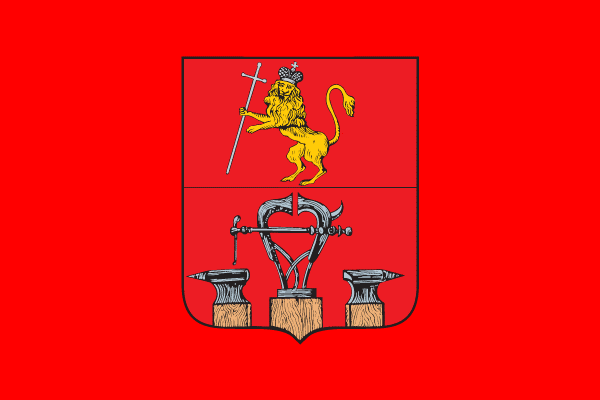

Герб города Александрова и Александровского района.

Герб города Александрова разработан на основе исторического герба города Александрова Владимирского наместничества, Высочайше утвержденного 16 августа 1781 года (по старому стилю). Подлинное описание исторического герба гласит: "Въ верхней части гербъ Владимирский. Въ нижней – въ красномъ поле слесарные тиски и две по сторонамъ наковальни, въ знакъ того, что въ семъ городе производятъ весьма изрядныя слесарныя работы".
Воссоздание исторического герба для современного города Александрова символизирует бережное отношение жителей к своему прошлому, историческую преемственность многих поколений жителей города.
Изображенные в гербе инструменты символизируют не только мастерство александровцев в прошлом, но и развитие промышленности в современном городе, которое является залогом успешного развития города в будущем.
Красный цвет – символ мужества, силы, трудолюбия, красоты и праздника.
Золото – символ богатства, стабильности, уважения, интеллекта.
Серебро – символ чистоты, совершенства, мира и взаимопонимания.
Административная принадлежность города Александрова к Владимирской области отражена в гербе с вольной частью, в которой изображены фигуры герба Владимирской области.
Районный центр.
Впервые Александровская Слобода упоминается в XIV веке в грамоте Ивана Калиты. Появлению поселения способствовали экономические связи между Переславлем, Суздалем, Владимиром и Юрьев-Польским. Князья, совершая свои разъезды, останавливались в слободском стане. С 1302 по 1778 г. Александровская Слобода относилась к Московским землям и личным землям царской семьи. В начале XV века Великая Слобода была волостным центром, где жили люди княжеской администрации. С течением времени Великая Слобода меняет свое название на Старую Слободу, наряду с ней также появляется Новое село Александровское. Документальная история Нового села Александровского отмечена началом XVI века завещательной грамотой Ивана III (1504 г.). Еще одним документальным подтверждением стал рукописный служебник XVI века Троице-Сергиева монастыря, донесший до нашего времени известие об освещении одной из слободских церквей в 1513 г. Здесь в 1513 г. лучшими русскими и итальянскими зодчими был построен загородный дворцовый ансамбль – резиденция Великого Московского князя Василия III.
История Александровой Слободы и окружающих ее поселений прочно связана с правлением Ивана IV, часто посещавшего Слободу. С 1564 года по воле Ивана IV на 17 лет Александровская Слобода становится де-факто столицей Российского Государства.
В течение XVI века Слобода продолжает строиться, особенно на этот процесс повлиял переезд царя из Москвы в Александрову Слободу в 1564 г. «Столичный» период в истории Александровской Слободы ознаменовался громадным строительством. Возникли земляные валы, рубленые стены крепости, башни, три каменных дворца, храмы и другие постройки. Смутное время принесло в край разорение. В зиму 1611-1612 гг. Александровская Слобода находилась во власти Яна Сапеги. Так, в XVII веке множество построек Слободы было разрушено, а дальнейшее монастырское строительство с ликвидацией дворцов и кремля XVI века кардинально изменило первоначальный облик архитектурного ансамбля. После подавления мятежа 1689 года из московского дворца в Слободу привезли сестру Петра I царевну Марфу Алексеевну. Впоследствии Слобода еще не раз использовалась в качестве места заточения. После царицы Екатерины I (1727 г.) Слобода перешла в наследственное владение ее дочери Елизаветы Петровны. С 1728 г. и до отъезда в Петербург Елизавета Петровна жила в Слободе.
В 1778 году указом Императрицы Екатерины II Александровская Слобода приобрела статус города. В 1781 году город получил герб. В верхнем поле изображен герб Владимирский – лев в короне на задних лапах с серебряным крестом в передней правой лапе. На красном нижнем поле изображены слесарные тиски и две наковальни, поскольку Александровская Слобода издавна славилась кузнечным промыслом.
История XIX столетия тесно переплетена с фамилиями фабрикантов Барановых и Зубовых.
В 1868 г., благодаря усилиям местных купцов и фабрикантов, через Александров прошла железная дорога. Во время первой русской революции в Александрове произошли события, которые вошли в историю нашей страны под названием «Александровская республика». Октябрьская революция 1917 г. в округе Александров «победила» еще до главных Петроградских событий. Это была единственная бескровная смена власти во всей владимирской губернии.
В советский период город являлся крупным промышленным центром, звание промышленного города остается за административным центром Александровского района до сих пор. Александров также является туристическим центром.